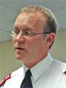

| Not to Reason Why...? Geoff Ryan, From “Sowing Dragons”, 2001 |
| ‘If knowing answers to life’s questions is absolutely
necessary to you, then forget the journey. You will
never make it, for this is a journey of unknowables – of
unanswered questions, enigmas, incomprehensibles,
and most of all, things unfair.’ (Madame Jean Guyon) ‘The question of why evil exists is not a theological question, for it assumes that it is possible to go behind the existence forced upon us as sinners. If we could answer it then we would not be sinners. We could make something else responsible. Therefore the “question of why” can always only be answered with the “that” which burdens man completely.’ (Dietrich Bonhoeffer, Creation and Fall / Temptation ) |
 |
| * Names have been changed |
| Fatima was three years old - a year older
than my daughter, a year younger than my
youngest son. She had two days to live. She
lay in the middle of a hospital bed, arms and
legs straight like a stick figure, wrapped in blood-stained
gauze to cover the burns on 70% of her body. Her face
was burned too. Tubes snaked out of her nostrils. The
only movement, the only sign of life, came from her eyes.
They were wide open and followed me as I moved around
the room, large and brown and wet. Her breath came in
short gasps as drawn out breaths caused too much pain.
Fatima was a Chechen and she died in that hospital bed in the city of Nazran in the Muslim Republic of Ingushetia, Southern Russia. The Second Chechen War, as it is becoming known, is a brutal conflict with a history behind it stretching back several hundred years. It is a particularly nasty example of the religio-ethnic, semi-nationalistic ‘peoples war’ that have characterized the declining years of the 20th century. ‘There is no one to root for in this mess of a war’ wrote Colin McMahon of the Chicago Tribune. He is dead right. Fatima was in the kitchen of her house in a small village in the Chechen interior when a flying piece of shrapnel from a rocket exploded into the hot water tank spewing boiling water all over her. At the border crossing into Ingushetia, the soldiers would not let her mother cross with her for three days. During those days, winter days, she lay in the open air, on the side of the road, with her open burns. By the time they were permitted to cross and made it to the hospital in Nazran, it was far too late. As the nurses changed the bandages for the last time on the day she died, silent tears flowed out of Fatima’s eyes to stain her pillow. She never complained and died with her eyes open, they simply stopped blinking, stopped watching, stopped seeing. One final, painful breath. I fled the hospital that day and stood outside gulping in the fresh air on the street. I breathed in huge drawn- out breaths to compensate for what Fatima wanted to do, but could not. My project manager for the relief effort we are running in Ingushetia and Chechnya, was quiet and tense. He is a Chechen, a Muslim, a refugee like Fatima. ‘I have a daughter her age’, he stated. I knew his story and knew that he has, in fact, five daughters. At the beginning of our acquaintance I foolishly asked, ‘no sons?’, knowing how important sons are in the patriarchal Chechen culture. ‘I had two sons’, he replied stonily. ‘Twins, both 1 1⁄2 years old. During the first war* they were hiding in our basement with their grandmother during an attack. A trooper threw a grenade into the basement.’ I can still see Fatima’s small face at night sometimes. Bright child eyes - much like my daughter’s. I can hear the short, sharp struggling gasps of air. I can smell the presence of death in the hospital room. I can see her mother slumped in the corner of the room, unblinking with Islamic resignation: ‘If Allah wills...’. I think of the soldiers in the planes who bombed the village and the ones at the checkpoint who rejected the small amount of money that Fatima’s mother offered them as a bribe. How much is the life of a three-year old worth? Does the price go up in a war zone? I imagine what I would do to them if I could get my hands on them. In spite of my theological training, in spite of myself, I could easily wonder where God was. I do not allow myself to. I never said a word further to my manager about this. We were silent together. He as a fatalistic Muslim. Me - a realist who has made a deal with God. * (1994-1996) ***** I am 38-years old, have lived in three different countries and have seen something of life. For the past nine years I have lived in Russia. I am a Captain in The Salvation Army and am presently responsible for all Army operations in nine cities in the south of Russia. Since arriving in this land, a month before the coup that ended Communism, I have changed much, learnt much. As one writer has noted, Russia marks people. Some it makes exquisite, others it cripples. I like to think of myself as a realist and as such, have come to a firm realization, a firm conviction, on three matters. I have ‘worked them out’ over the years of my life to date, in a hundred engagements with the enemy, with much ‘fear and trembling’ as required by the Scriptures. The first conviction is this: Not every problem has a solution. The second one is: Life is not fair. The third one is with regard to the existence of evil in the world: The question is not to ask ‘why?’, but rather – ‘what now?’ There is no point on speculating why it exists and why God allows it. Far better to acknowledge the facts before one and deal with these. These are more than convictions of mine, to me they are proven facts - slow in coming but steadily forged over years as a soldier in the fight of faith. They cannot be disproved to me. They form a paradigm that allows me to fight the battles God has sent me into. They allow me to survive, to get through the night. Bear with me as I continue the retelling of three encounters of recent months by way of explanation. ***** ‘I’m afraid to say it...to say what I am really thinking.’ It was quiet and warm in the car and snow was falling outside. Tears formed in the corners of her large eyes as she bowed her head and stared unseeing into her lap. I have known Natasha for almost nine years now, starting from the time she wandered into one of our first meetings in the city then known as Leningrad, now called St. Petersburg. It was early autumn 1991. She got saved, joined the corps, became a soldier, eventually working fulltime for the Salvation Army. She was eighteen then. Born and raised in Kazakhstan in Central Asia, at seventeen Natasha left home to become an actress. She did not make the stage, instead she found us. In 1994, Natasha moved south to Rostov-on-Don as part of a team assisting my wife and myself as we pioneered in the region. Three days after arriving in Rostov, Natasha received a call from home - her Father had died of alcohol poisoning. She went home to bury him and then returned to us. The other team members went back north after a year while Natasha stayed. I have never met anyone with a gift for working with children like Natasha. She can work magic with them, becoming one with their world yet remaining apart, moving easily in and out and never really belonging in either. Now aged 28, she remains to me the most perplexing combination of childish innocence and worldly guile. She exudes simplicity yet at times comes out with the most profound thoughts. She needs people, an audience - yet is almost painfully shy. She remains alone in the biggest crowd and her dazzling smile is marred only by the sadness in her eyes. She is an enigma. She is also now an orphan In September the rest of her family died - her elderly mother, her older brother and his wife. Wiped out in one afternoon by a man as yet free. If Americans choose to kill mainly with guns - Russians use knives, and Natasha’s family died a Russian death with no clear motive, blood splattered walls and lingering agony in the ill-equipped emergency ward of the local hospital. At the time of our conversation, Natasha had just returned from burying the rest of her family. ‘I think I hate God’, she continued. I had noticed that during meetings she did not sing anymore and that her eyes remain open and staring during prayer. ‘I can’t sing, I can’t pray, I can’t even think of God without...’ The inevitable ‘why’ remained unspoken, but everywhere present. She had a point. Since consecrating her life to God almost a decade before she had served faithfully, doing what we asked of her, going where we wanted - a gypsy life with no real fixed abode in often difficult places, working long hours, minimal pay. ‘No personal life whatsoever’ was one of her habitual sayings, said only half-jokingly. ‘... what does the Lord require of you? To act justly and to love mercy and to walk humbly with your God.’ What more? Why then? Her mother would visit from time to time - a simple soul, a nice lady, benign. Not asking much from life and never having received much. She believed in God, as all women her age in Russia seem to nowadays. She smiled much, like her daughter. I remember her singing a folk song one night during a campfire at one of our summer camps. ‘My mother was believer’, Natasha whispered, ‘but my brother...’ The tears came again. Very briefly I considered defending God by explaining the complicated relationship between free will, the sovereignty of God and the terrible implications of God’s refusal to win by coercion and thus the sin within and the evil around. My heart was not in it. It would not have helped. I wanted to hold her close, comfort her and tell her that I would look after her and that nothing bad would ever happen again. This would have been a lie, though, and was not appropriate in any case. So I bought her an ice cream, assured her that the culprit would receive his punishment (if not here, then in the hereafter). ‘Nothing will change what has happened’, I said, ‘the issue now is not why, but what next?’ I offered my help in a practical manner with the legal details. We talked no further about God. ***** Olga is not the type to ‘rage, rage against the dying of the light’, though I would if I were her. She is placid by nature, docile some would say, certainly calm and quiet. Maybe things like this happen to people like her because of this, because she lets them happen. Who can tell? She is 21 now and came to us after having made contact with our HIV/AIDs, Drug & Alcohol Rehab Program. She came for counseling. She was eighteen. Her live-in boyfriend was an addict and infected her in bed. Olga became HIV positive. The counseling helped and she started attending church. She got saved, became a soldier, left her job selling in the local market, took discipleship training with another Christian agency in the city then entered our own mission training program. She changed from an emotional flatliner to a smiling, cheerful follower of Jesus. ‘I can’t believe how I lived before,’ she said, ‘I feel like it was all only a dream and only now have I woken up to life!’ One night Olga’s old boyfriend came calling, one thing led to another - he raped her. She became pregnant. Her grandmother insisted she get an abortion - she refused as a Christian. We suggested she put the child up for adoption - she refused as a mother. The church council allowed her to remain as a member in good standing. She had done nothing wrong, nothing at all. The boyfriend now attends Sunday services, his motives unclear. I shake his hand resentfully, not wanting to meet his gaze lest he read in my eyes what I truly think of him. How could he? How could God let him ruin it all - everything was going great. Olga finally, for the first time in her short twenty years had the chance at life. She had taken hold of hope and was fashioning a future. All now ripped out and stamped out like a cigarette butt in a ten-minute scuffle in a dingy apartment on an autumn evening. The dream turned into a nightmare. Olga has stopped smiling these days. She is due in the next month. How long will she live? Will her child be HIV positive? Where does the boyfriend fit in? Olga does not ask these questions, she is too placid, too resigned. She simply does not smile anymore. I could rage for her, it is in me - this is beyond unfair, a no-win situation for everyone, no answers in sight. But I do not rage. I shake my head and move on. I am a soldier, I know there is little point in lingering over a casualty. The medics have been called. There is nothing more for me to do here. ***** As a Westerner and therefore a child of the enlightenment, I am a product of rationalism. As a Protestant I am therefore uncomfortable with mystery. Every question has an answer, every problem a solution, there is always a way to figure things out and satisfy the need to know. We were given this understanding with our mother’s milk. But nine years in Russia, close engagement with the Eastern Orthodox tradition and with a nation whose thinking patterns are more Eastern than Western and who are therefore comfortable with mystery – all this has has an effect. I have changed, I think differently now. Somewhere along the journey I stopped trying to figure out how evil came into the world; why God allows little children to suffer; why life is so unfair to some and so generous to others. I stopped asking why? To wonder why is a luxury it turns out, one that I indulged in when I had the time and space, when I could turn the problem over at arm’s length, rationally and objectively weigh all sides of the issue, when it mainly only theory that I had experienced. Then I wondered ‘why?’ and I wondered much about it. That was a long time ago. Theory gave way to experience, to reality, and I found things different on the battlefield, with the enemy pressing hard and the ground slick with blood; when you are bone-tired with the fear that has been throbbing through your veins so fast for so long that it seems you will split open; when the stench of sin and evil and pain clogs your nostril and invades your lungs. When this happens, you could care less ‘why’ this is all happening. You are in the middle of the ‘what now?’ and there is no other reality. To think otherwise would be fatal, the enemy waits for such an opening. So you follow orders, parry and thrust and slash and leave the philosophers to contemplate ‘why?’ And so I compromised and made a deal with God. I would no longer ask ‘why?’ I would live with mystery and paradox and a hundred unanswered questions and unsolvable problems. I would forget my upbringing and my heritage and learn my lessons from the long-suffering Slavs among whom God has sent me to live and work. I would put aside my ruminations and work with the ‘what now?’ I would fight evil and unrighteousness with all my might and save as much of the world as I could. I would focus and not allow any distractions, any luxuries, I would no longer ask ‘why?’ “Theirs is not to reason why, there’s but to do and die”, wrote Tenneyson . And I have died a hundred deaths since I made that deal - in hospital rooms, bedsides, darkened cars, back alleys and lately amid the carnage of war. But I have not gone back on my deal. I have fought and will continue to fight, to the very end. When all is finished for me, however. When I have fought the food fight to the end and I stand before the Lord, bloody and scarred no doubt, but hopefully unbowed. Then I will ask of God to keep His end of the bargain. I will talk about Natasha and Fatima and Olga and the hundreds and hundreds of others - and I will want some answers. I will ask ‘why?’ I will scream it out until it fills the heavens and shakes the earth. I will deafen the angels with my ‘WHY?’ Where was I when He laid the earth’s foundations? Where was He when Fatima was shivering on the ground as the infection spread through her body? I really do not think that it will come to this, however. God is good, He keeps His promises. After all, we made a deal. |